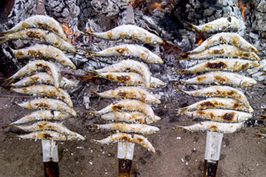

Gastronomia
La cocina malagueña es un compendio de toda la gastronomía de la provincia y se encuadra dentro de la
dieta mediterránea.
Los
Espetos de Sardinas, los boquerones, tanto fritos como en vinagre, y el pescaíto frito hecho
a base de boquerones, jureles, salmonetes, pulpo o calamares, son los platos más típicos, pero también
cabe mencionar la cazuela de fideos, el gazpacho, el gazpachuelo, las migas, la ensalada malagueña,
el ajoblanco y la porra antequerana, entre otros.
Málaga es conocida por sus vinos dulces que se producen desde la antigüedad. Estos vinos están protegidos
bajo la
Denominación de Origen Málaga y Sierras de Málaga.
Además, también son tradicionales el Ron de Málaga y el brandy.
